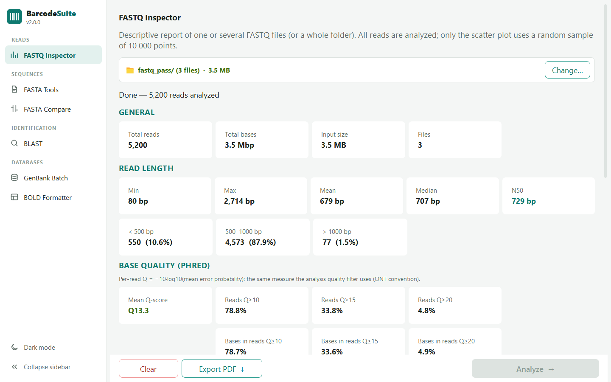
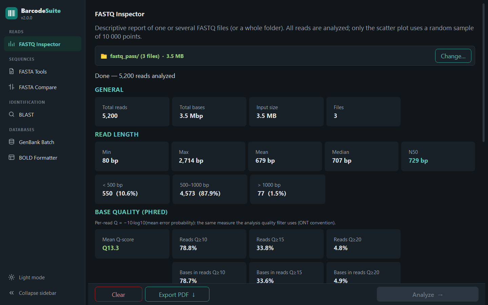
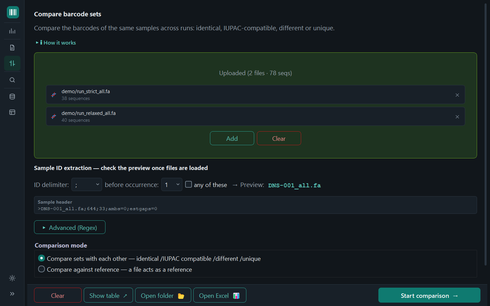
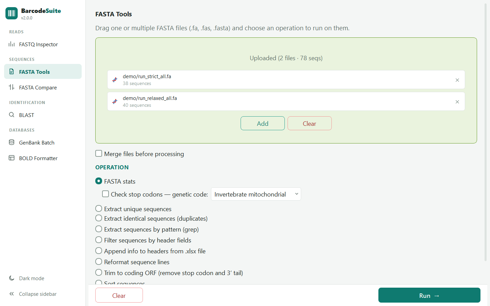
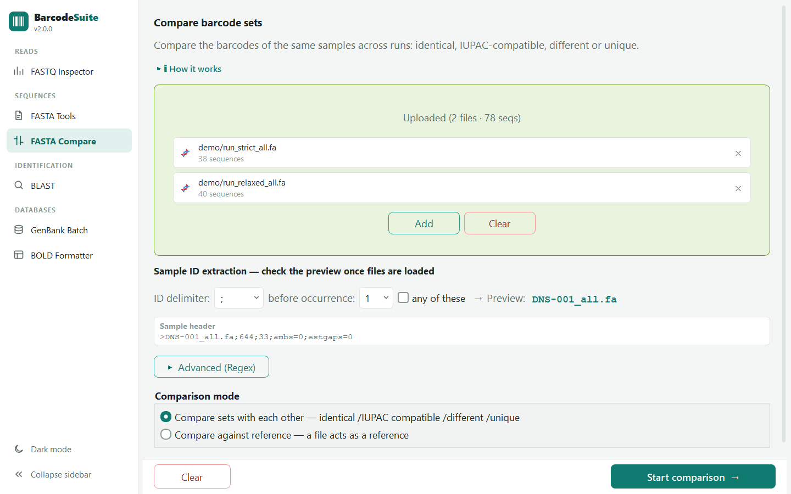
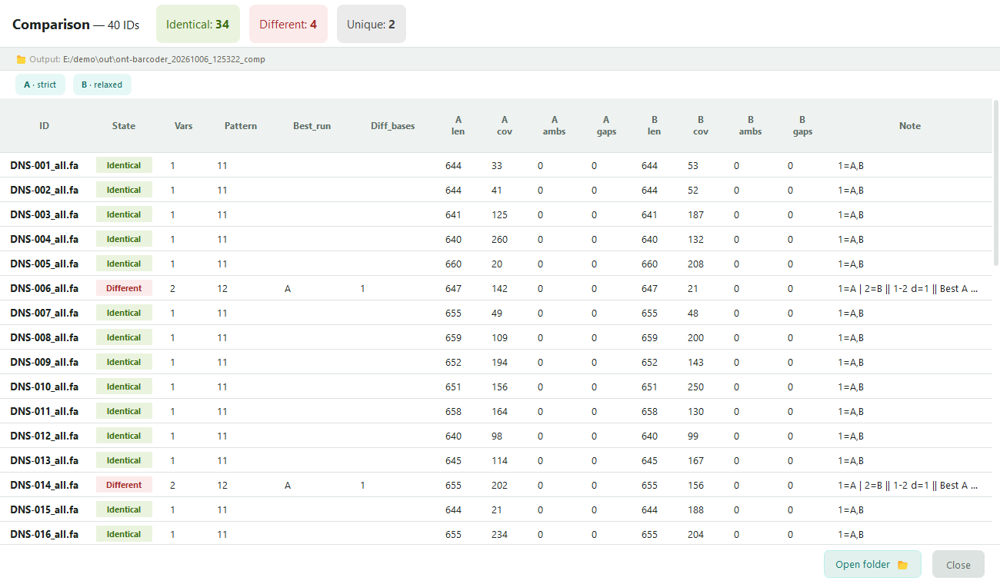
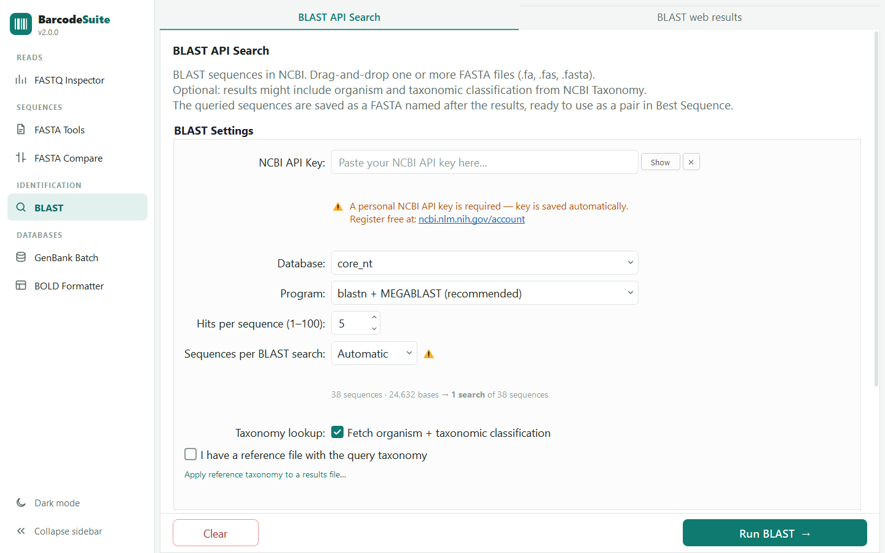
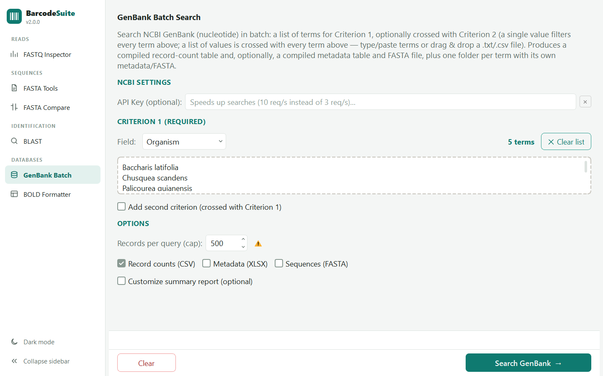
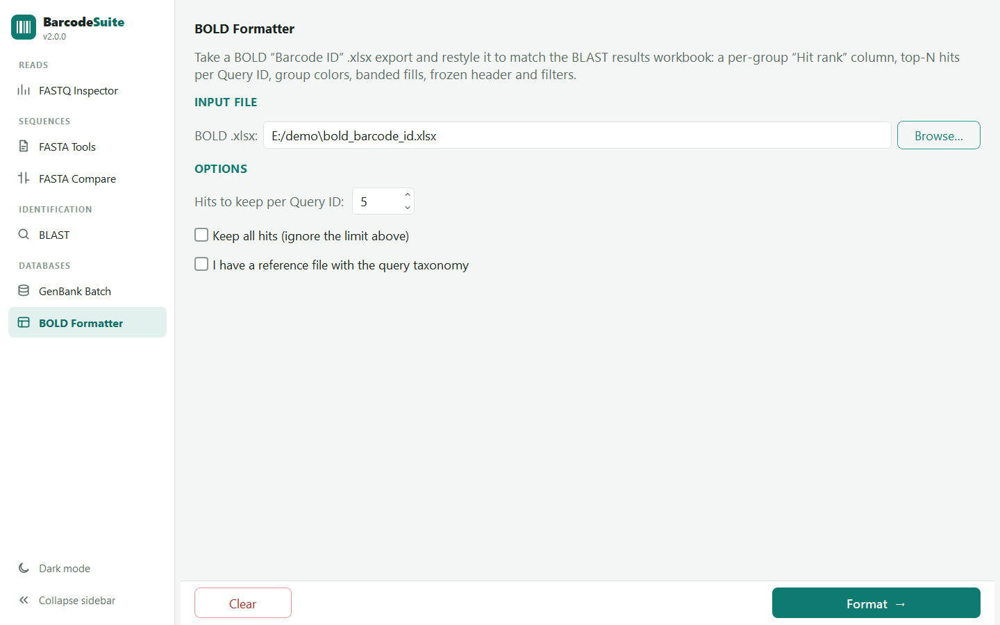

BarcodeSuite User Guide
BarcodeSuite is a desktop app with six tools for working with FASTQ and FASTA files in DNA barcoding workflows. It reads outputs from ONTbarcoder / Nanopore, BOLD and GenBank.
Graphical interface (PyQt5) Drag & drop Light & dark theme Windows / Linux
The window has a sidebar on the left. Each entry opens a separate tool:
Quality report for one or more FASTQ files, or a whole
fastq_pass/ folder.Nine operations on FASTA files, including stats, filters, appending info to headers, ORF trimming and sorting.
Compares barcodes sample by sample across runs or against a reference.
Runs an NCBI BLAST search, or reads results downloaded from the BLAST website.
Batch GenBank search with up to two crossed criteria. Writes counts, metadata and FASTA.
Restyles a BOLD "Barcode ID" workbook to match the BLAST results report.
Requirements & installation
Python dependencies
You need Python 3 and these libraries:
pip install PyQt5 edlib xlsxwriter openpyxl biopythonPyQt5: the graphical interface.edlib: fast sequence alignment, used by FASTA Compare.xlsxwriter/openpyxl: reading and writing Excel files (.xlsx).biopython: translation for Trim to coding ORF in FASTA Tools.
python barcodeSuite.py from source, the app checks these libraries (and
pip itself) at startup and installs any that are missing. The packaged .exe
already includes everything and does not do this check.Running the program
# From the project folder
python barcodeSuite.pyicon.ico file sits next to the program, it is used as the
window and taskbar icon.The interface

Sidebar, theme and remembered settings
- Sidebar: tools are grouped under Reads, Sequences, Identification and Databases. Click a tool to open it. Each tool keeps its loaded files and settings while you switch to another.
- Collapse the sidebar: click Collapse sidebar at the bottom of the sidebar, or press Ctrl+B. The sidebar shrinks to a column of icons, and hovering an icon shows the tool's name.
- Light / dark theme: the Dark mode / Light mode button switches the theme straight away, with no restart. On Windows the window's title bar switches too.
- Remembered between sessions: the theme, whether the sidebar is collapsed, the last tool you had open, and the window's size and position.


How every tool works
Drag files (or a folder, where the tool accepts one) onto the drop zone, or click Add / Browse… to pick them.
Each operation shows only the settings it uses.
The main button at the bottom right (Analyze →, Run →, Start comparison →…) runs the job in the background, with a progress bar. Long jobs can be stopped with Stop.
A log or results area shows what was done and which files were written. Open folder opens the output folder.
Resets the tool: unloads its files and clears its results.
output/ont-barcoder_<date>_<tool>/ next to the program
(e.g. …_comp, …_blast, …_fastools). You can pick a different
folder instead. GenBank Batch writes to genbank_batch_<date>/..fa, .fas, .fasta, .fna.
FASTQ: .fastq, .fq, .fastq.gz, .fq.gz.
Tables: .xlsx, .tsv, .csv.1 · FASTQ Inspector
A full quality report for one or more FASTQ files, or a whole folder.
Drag one or more FASTQ files, or a folder, onto the drop zone. Browse files… lets you
select several files and Browse folder… picks a folder. Folders are searched recursively,
so you can drop an ONT fastq_pass/ folder with its barcode01/,
barcode02/… sub-folders as it is. All files are analysed together.
Once the input is chosen, the drop zone shrinks to a single row (Change… picks another input). The progress bar shows the percentage of input read, including for gzip files. Stop cancels the analysis and keeps the input loaded.
Metrics reported
| Section | Indicators |
|---|---|
| General | Total reads · total bases · input size · number of files |
| Read length | Min · max · mean · median · N50 · reads by range (<500, 500–1000, >1000 bp) |
| Base quality (Phred) | Mean Q-score · % of reads with Q≥10, Q≥15, Q≥20 · % of bases in those reads, i.e. the usable yield an equivalent quality filter would keep |
| GC content | Mean GC% · standard deviation of GC% |
Plots: read length distribution, distribution of the mean Q-score per read, GC% distribution and a length vs. quality scatter plot. All reads are used for the statistics. Only the scatter plot uses a random sample of 10,000 points, to keep it responsive. Export PDF saves the full report.
−10·log10(mean error probability) of its bases. This is the ONT
convention and the same score used by ONTbarcoder's minimum read quality filter, so the Q≥N
percentages predict what that filter keeps. It is lower than the plain average of the Phred values,
which barely changes when a few bases are very poor.Breakdown by group
When the input has two or more groups, a sortable table lists, for each group: files, reads, % of reads, bases, mean length, mean Q and reads at Q≥10. A group is either a first-level sub-folder of a dropped folder (files directly inside it form a (folder root) group), or each file or folder when you drop several at once. The table shows at a glance which barcode under-performed, and the PDF export includes it too.
Performance and damaged files
When there are several files, they are read in parallel on all CPU cores, and a large uncompressed
file is also split into chunks. A .fastq.gz that ends early, typically because MinKNOW is
still writing it, does not stop the analysis. The reads before the damage are used, and the status line
turns amber and names the affected file(s).
2 · FASTA Tools
Batch operations on one or more FASTA files.

- Checked: all files are combined and processed as one set, giving a single output.
- Unchecked: each file is processed on its own, giving one output per file.
| Operation | What it does |
|---|---|
| FASTA stats (default) | Writes descriptive statistics to <name>_stats.xlsx, with three sheets:
-,
.) are counted but excluded from the length.Check stop codons is optional and off by default. Leave it off for non-coding markers. It uses the genetic code you choose (Standard, Vertebrate mitochondrial, Invertebrate mitochondrial or Plant plastid) and scans all six reading frames, then reports the frame with the fewest stops: the frame, the number of stops and their positions. A stop codon in a coding barcode (COI, rbcL, matK) points to a pseudogene (NUMT), an indel error or a wrong marker. |
| Extract unique sequences | Collapses duplicate sequences to one representative.
Output: <name>_unique.fasta |
| Extract identical sequences (duplicates) | Writes the sequences that occur more than once, plus _duplicate_groups.xlsx, which groups
IDs by shared sequence (an IDs sheet and a Groups sheet). |
| Extract sequences by pattern (grep) | Keeps the sequences whose header matches a pattern. You can type the pattern, or load a
.txt file with one pattern per line, and optionally treat patterns as regular expressions.
By default a pattern matches anywhere in the header, so DNS-1 also selects
DNS-10. For a list of IDs, turn on Match whole ID. It turns on automatically when
patterns are loaded from a file. |
| Filter sequences by header fields | Splits each header with a separator (|, ; or a custom one) and keeps the
records that meet all the criteria you add (AND logic). Criteria are set by field position, with
the operators = != > <
>= <= contains not contains. A preview
shows the fields of the first sequence. |
| Append info to headers from .xlsx | Adds fields from a spreadsheet to each header: column 1 = sequence ID, columns 2 onwards = fields to
append, joined with the separator you choose. IDs and values are normalized: spaces, periods and
commas become _ and accents are removed. |
| Reformat sequence lines | Puts each sequence on a single line (unwrap), or breaks it every N bases (wrap, 80 by default). |
| Trim to coding ORF | Trims each barcode to its longest clean open reading frame (all six frames are checked), removing the
stop codon and the non-coding 3′ tail. Choose the Genetic code and the Min. ORF coverage
(95 % by default). A sequence that already translates cleanly is left unchanged. A sequence whose
ORF covers less than the minimum is also left unchanged and listed in the log as a possible NUMT or
wrong genetic code. Output: <name>_orf.fasta |
| Sort sequences | Sorts by the whole header or by header fields. You can add several sort levels (multi-key sort, each ascending or descending). |
How sequence IDs are matched (Append info · Match whole ID)
Both operations need an ID for each sequence. The ID is the header text before the first separator
chosen in ID = header text before first: ; (the default, for ONTbarcoder headers),
space, | or a custom one. Remove suffix optionally removes text from the end
of the ID. For example, >DNS-1_all.fa;758;807 with ; and suffix
_all.fa gives DNS-1. A live preview shows the ID taken from the first header,
and how many sequences match the spreadsheet or the pattern list.
3 · FASTA Compare
Checks whether barcode FASTA files agree, sample by sample.
Use it to compare the barcodes of the same samples across runs or pipelines, or against a curated reference. Each sample's sequences are aligned (edlib, global alignment) and classified as follows:

| State | Meaning |
|---|---|
| Identical | The sequences are equal, character for character. |
| Compatible (IUPAC) | The sequences are equal once IUPAC ambiguity codes are treated as matches. The number of ambiguous positions is reported. |
| Different | The sequences are incompatible. The edit distance is reported. |
| Unique | The sample is present in only one file. |
| Only in reference / No reference | Reference mode only: the ID is in the reference but in none of the compared files, or the other way round. |
Matches on the reverse complement are detected and flagged [RC].
Comparison modes
- Compare sets with each other: every sample ID shared by two or more files is compared across all of them.
- Compare against reference: one file is the reference and the others are compared against it.
Sample ID extraction
Load the files first. The settings below the drop zone then show a live preview of the ID extracted from a real header.
- Delimiter mode (default): choose an ID delimiter and which occurrence to cut before.
The default delimiter is
;, which matches ONTbarcoder headers such as>Cnt1_all.fa;745;22;ambs=2;estgaps=0;_,|, space,.,-and custom delimiters are also available. any of these treats the delimiter as a set of characters and cuts at whichever one appears first. - Advanced (Regex) mode: one or more regular expressions, tried in order until one matches. If
the expression has a capture group, group 1 is the ID. Optional normalization can make the same sample
match across naming conventions: lowercase, strip leading zeros
(
BIOUG00045 → BIOUG45), or strip (regex), e.g._S\d+$.
Results

Each file gets a one-letter alias (A, B, C…, in the
order loaded; the reference is always REF), so column headers stay short
(A_len, A_cov…). In all-against-all mode, files that carry exactly the same
sequence for a sample are grouped into a numbered variant group:
Varsis the number of distinct sequences for the sample.Patterngives one group number per file, with.where the file lacks the sample. For example,123114means files 1, 4 and 5 agree.Notelists group membership, the distances between groups and the chosen best sequence.
Where sequences differ, the "best" barcode is the one with the fewest ambiguities, then the fewest gaps, then the highest coverage.
| File | Content |
|---|---|
summary.xlsx | Color-coded summary, plus a Runs sheet that explains each alias. |
best_barcodes.fa | The best sequence for each sample. |
identical.fa · compatible_iupac.fa · different.fa | Samples in each state. |
only_in_reference.fa / without_reference.fa | Reference mode only. |
If an output file cannot be written (usually because summary.xlsx is open in Excel), a
warning lists it. Close the file and run the comparison again.
4 · BLAST
Taxonomic identification with NCBI BLAST, in two tabs.
BLAST API Search sends your sequences to NCBI. BLAST web results reads a hit table you already downloaded from the BLAST website. That is useful when NCBI has slowed down searches from your IP, because it does not submit a new search. The two tabs write the same kind of results table, but only one can run at a time: each has its own NCBI rate limiter, and running both would double your request rate.

ncbi.nlm.nih.gov/account and paste it into NCBI API Key.
It is saved to _profiles/blast_config.json and reused in later sessions, and also by the other tab
and by GenBank Batch. The key is hidden on screen; Show / Hide toggles it.4.1 BLAST API Search
| Option | Description |
|---|---|
| Database | core_nt, nt, refseq_rna, 16S_ribosomal_RNA |
| Program | blastn + MEGABLAST (recommended), blastn or megablast |
| Hits per sequence | 1–100 (default 5) |
| Sequences per BLAST search | Automatic (default): uses the fewest searches, spreads
the sequences evenly, and stays under 1,000,000 bases and 100 sequences per search.
Manual: 1–1000. A line below shows the plan before you run, e.g.
516 sequences · 429,647 bases → 6 searches of ~86 sequences. |
| Taxonomy lookup | Fetches the organism and its classification (Kingdom → Genus) for each hit. |
- Hits are written as the run progresses to
blast-<ts>.tsvand.xlsx. The queried sequences are saved alongside asblast-<ts>.fa, with the same base name. - Sequences with no hit go to
nohit_seqs_<ts>.fa. Batches that failed, or whose results could not be downloaded, go tomissing_seqs_<ts>.fa; the log gives the RID so you can retrieve them by hand. The counts are recorded inblast_run_log_<ts>.txt. - If NCBI rejects a batch, it is halved and retried automatically, down to 20 sequences or three halvings.
- Each search can wait up to 45 minutes; its status is checked once a minute. Stop takes effect within about 30 s.
- Taxonomy and accession lookups are cached (
taxadb.dbx,accdb.dbx) and reused in later runs.
4.2 BLAST web results
Run BLAST yourself at blast.ncbi.nlm.nih.gov, export with Download All → Hit Table(text) or
Hit Table(csv), and drop the file here. Both formats are detected automatically, and you can drop several
files at once.
- Hits per sequence to keep caps how many hits are kept per query.
- Fetch organism + taxonomic classification uses NCBI E-utilities. These requests do not count toward the 100-searches limit.
- The tab writes
blastfile-<ts>.tsv/.xlsxand a run log. It writes no FASTA of the queried sequences, because the downloaded file contains hits only.
4.3 Query taxonomy reference file (both tabs)
Tick I have a reference file with the query taxonomy and drop one table (.csv,
.xlsx or .tsv). The columns Query_Order, Query_Family,
Query_Genus and Query_organism are then added to the results, matched by sample ID
(the text before the first ; of the query name, after removing Strip suffix from sample ID,
_all.fa by default). The identifier column comes first, and the next four columns are read, in order, as Order,
Family, Genus and Organism:
Sample,Order,Family,Genus,Organism DNS-1343,Asterales,Asteraceae,Baccharis,Baccharis latifolia DNS-1400,Poales,Poaceae,Chusquea,Chusquea scandens
If a run has both the hit taxonomy and the reference taxonomy, the table also gets
Tax_level_match: the deepest rank at which the two agree (organism, genus,
family, order or none).
Apply reference taxonomy to a results file… re-applies a reference to a table you already have,
without a new BLAST search. Use it, for example, when the reference wasn't ready at the time of the search. It
updates the .tsv/.csv in place and rebuilds its .xlsx.
5 · GenBank Batch
Batch search in GenBank (nucleotide) with up to two crossed criteria.
Give a list of terms for Criterion 1 (e.g. species), optionally crossed with a Criterion 2 (e.g. a country or gene). The tool returns record counts, metadata and FASTA sequences straight from the NCBI API (E-utilities), with no external utilities needed.

NCBI API key (optional)
Without a key, NCBI allows about 3 requests per second; with one, about 10. The key is shared with the BLAST tool.
Criterion 1 and Criterion 2
- Field: the NCBI search field:
Organism,Country,Gene,Title,All Fields,Accession,AuthororJournal. - Term list: type or paste one term per line, or drop a
.txt/.csvfile. The N terms counter updates as you type, and ✕ Clear list empties the list. - Criterion 2 (tick Add second criterion): with one value, it filters every Criterion 1 term. With several values, each one is combined with every Criterion 1 term (Cartesian product).
Options
| Option | Description |
|---|---|
| Records per query (cap) | 1–10,000 (default 500). This limits how many records are downloaded, not the count reported. |
| Record counts (CSV) | Always on: the record count for each term or combination. |
| Metadata (XLSX) | Accession, organism, marker/gene, definition, length, molecule type, division, country, isolate, voucher, collection date, coordinates, taxon ID, dates and taxonomy. |
| Sequences (FASTA) | Headers in the form accession|organism|marker|term1|term2. |
Customize summary report
Optionally, add columns to the counts table showing how many distinct values of Marker/Gene, Moltype, Division or Country were found for each term, and/or listing them (with counts, and an optional limit on how many are listed). This requires downloading each record, up to the cap.
source, using its /gene or /product qualifier. Names vary between records
(COI / COX1 / CO1), so normalize them before relying on exact counts.Output files
| File | Content |
|---|---|
genbank_batch_counts_<date>.csv | One row per term or combination. |
genbank_batch_metadata_<date>.xlsx | Metadata from all terms combined. |
genbank_batch_sequences_<date>.fasta | Sequences from all terms combined. |
individual_results/<term>/ | One sub-folder per term, with its own metadata and FASTA. |
6 · BOLD Formatter
Restyles a BOLD "Barcode ID" export to look like the BLAST results workbook.

Input
Use the BOLD "Barcode ID" workbook as downloaded: a title row, then a header row with at least
Query ID and ID%, then the hit rows. The header row is found within the first five rows. Hits
are grouped by Query ID and sorted by ID%, and numbers stored as text are converted. If some
hit rows have no Query ID, a dialog lets you Rename them (No_query_ID_01…) or
Remove them.
Options
- Hits to keep per Query ID (default 5), or Keep all hits.
- I have a reference file with the query taxonomy: the same reference table as in BLAST
(§4.3). It adds the
Query_*columns andTax_level_match, comparing BOLD's Order / Family / Genus / Species with the expected taxonomy.
Output
<name>_formatted.xlsx is written to the folder you choose (automatic:
output/ont-barcoder_<date>_bold_format/). It has a per-query Hit rank, the first hit of each
query in bold, banded fills, a frozen header, filters, and columns colored by role: identifiers, BOLD match metrics and
taxonomy.
Tips & troubleshooting
When run from source, it installs missing libraries at startup. If that fails, install them by hand (see Requirements) and read the console message.
Usually a missing or wrong API key, NCBI's slow queue, or a rejected large batch. Use Automatic batch size, wait, or use BLAST web results.
Check the ID preview. Adjust the delimiter and occurrence, use any of these, or switch to Regex mode with normalization.
Check the ID rule and its preview. Column 1 of the Excel file must match the ID after normalization.
It is probably open in Excel. Close it and run again.
Without an API key the limit is about 3 requests per second. Add a key, and avoid very high caps with long term lists.
FASTQ Inspector charts always use a white background, the same as in the PDF export.